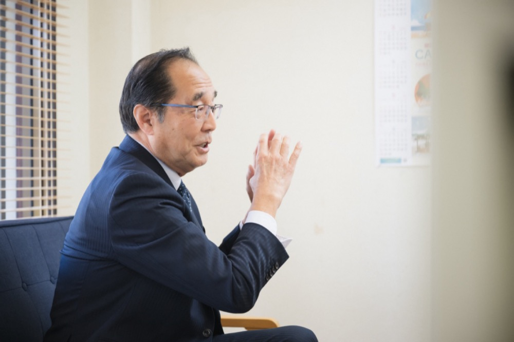
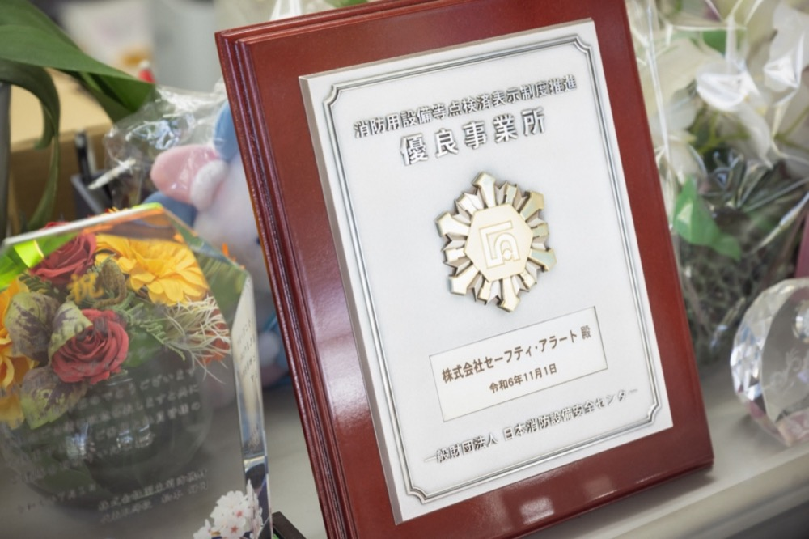

安定を求めた創業の原点
平野 征夫
株式会社セーフティ・アラート 代表
大学卒業後、大手電機メーカーの特約店にて空調設備のエンジニアとしてキャリアをスタート。日々の緊急対応に追われる中で、法令に基づき計画的かつ安定した需要のある「消防設備」の業務に将来性を見出し、25歳で転身を決意する。現場での修業を経て、平成元年（1989年）、35歳で独立し同社を設立した。 現在は、一般社団法人千葉県消防設備協会の理事も務め、業界全体の発展に尽力している。
企業サイトを見るTRACK 01
安定を求めた創業の原点

平野がこの業界に足を踏み入れたのは意外なきっかけだった。大学卒業後、最初に就職したのは大手電機メーカーの特約店。そこでエアコンや空調設備のサービスエンジニアとしてキャリアをスタートさせた。
「当時はとにかく忙しかったですね。夏と冬の繁忙期はもちろんですがエアコンというのは『壊れたからすぐ来てくれ』という緊急の呼び出しが常なんです。お客様にとっては死活問題ですから24時間体制で対応しなければならず精神的にも体力的にも休まる暇がありませんでした」
「ある時、消防設備の点検業務を知り衝撃を受けました。エアコン修理のような突発的な対応とは異なり消防設備点検は消防法で『年2回』と定められた定期的な業務です。スケジュールがあらかじめ決まっていて計画的に仕事ができる。この『安定感』に強く惹かれました」
TRACK 02
「点検」だけで終わらせない工事まで完結できる強みと「仲間」の力
「この業界には、点検の資格しか持っていない業者も少なくありません。点検で不備が見つかっても『直すのは別の業者にお願いしてください』となってしまう。しかし、お客様である管理会社やオーナー様からすれば不備が見つかったらすぐに直してほしいのが本音です。うちは点検で見つかった不良箇所を、その場で、あるいは後日すぐに工事して直すことができます。この『点検＋工事』を一貫して行える点が多くのお客様から選ばれている理由です」
現在、同社は平野を含めた少数の精鋭社員と多くの協力会社によって支えられている。平野が大切にしているのは下請け業者を単なる「使い走り」にせず「対等なパートナー」として接することだ。
「私が現場に出るのが好きだということもありますが現場を知らないと適切な指示が出せませんし協力会社さんの苦労も分かりません。丸投げにして管理だけするようなやり方ではミスが起きた時に大きな損害に繋がります。だからこそ、同じ釜の飯を食う仲間として協力し合い、信頼関係を築くことを何より大切にしています」

TRACK 03
「資格ビジネス」の真髄 若者が目指すべき独立への最短ルート
平野が特に熱を込めて語ったのが消防設備業界の「稼げる」ポテンシャルと若者へのキャリア提案だ。
「今の若い人たちには、ぜひこの業界に入ってきてほしい。なぜなら、ここは『資格ビジネス』の世界だからです。消防設備士の資格は国家資格であり、これさえあれば仕事に困ることはありません。学歴も関係ない。やる気と資格さえあれば、誰でもプロフェッショナルになれます」
平野代表が描くキャリアパスは明確だ。まずは会社に入り、資格を取得しながら技術を学ぶ。そして数年後に独立して個人事業主としてやっていくという道だ。